手机里的追剧片单，终于能搬到 Mac。
手机上收藏的好故事，回到 Mac 不用重新找。
登录同一红果账号，把片单和观看记录带到大屏。
v1.0.1 · macOS 13+ · Apple Silicon / Intel 通用包
非官方社区项目 · 尚未经过 Apple 公证
v1.0.0 新版客户端实拍 · 1080p 画质展示
今晚，想看哪一种？
精选剧目 · 点击前往官网查看
生活里的另一种可能
都市情感 · 古风爱情 · 家庭故事想象力，不必设限
热血冒险 · 奇幻世界 · 穿越人生新的画面，新的故事
AI 剧目 · 换一种方式入戏属于 Mac 的追剧体验
手机放下，故事继续。
打开推荐找一部好剧，也可以搜索剧名。用同一红果账号同步收藏、观看记录与预约，换到 Mac 接着看。
- 手机 × Mac 同账号追剧账号收藏、观看历史、预约与点赞云同步测试。
- 高清播放，按本集片源选择1080p / 720p / 540p / 360p，兼容处理与受限恢复。
- 桌面留给正事，好故事放进小窗回消息、查资料时随时接着看；置顶按需要开关。
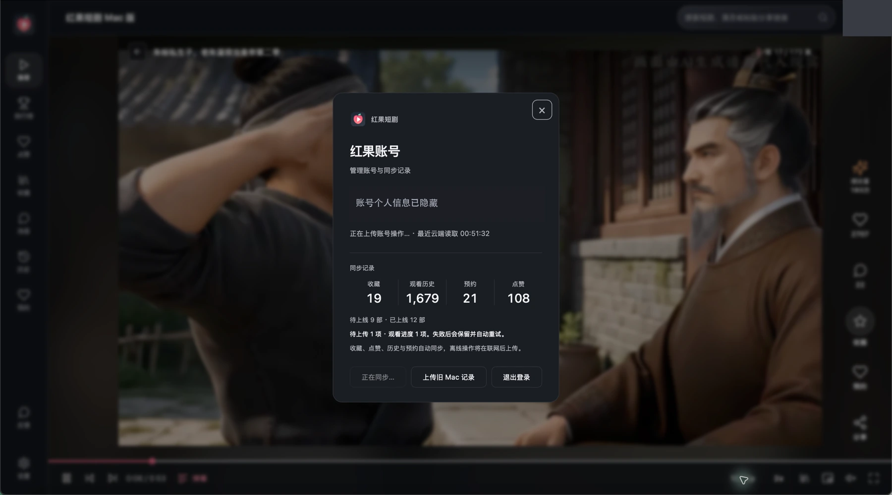
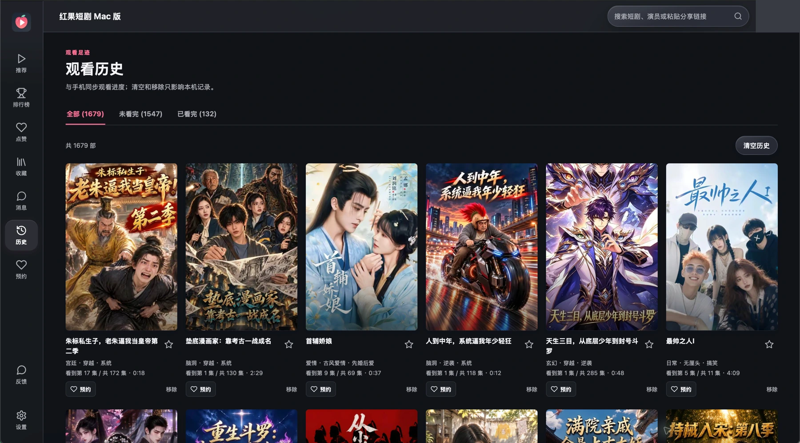
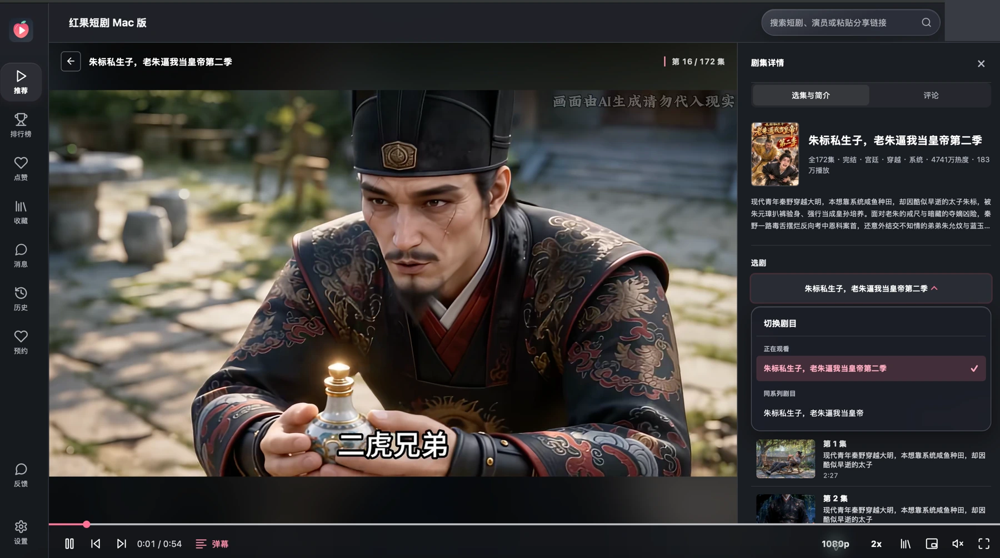
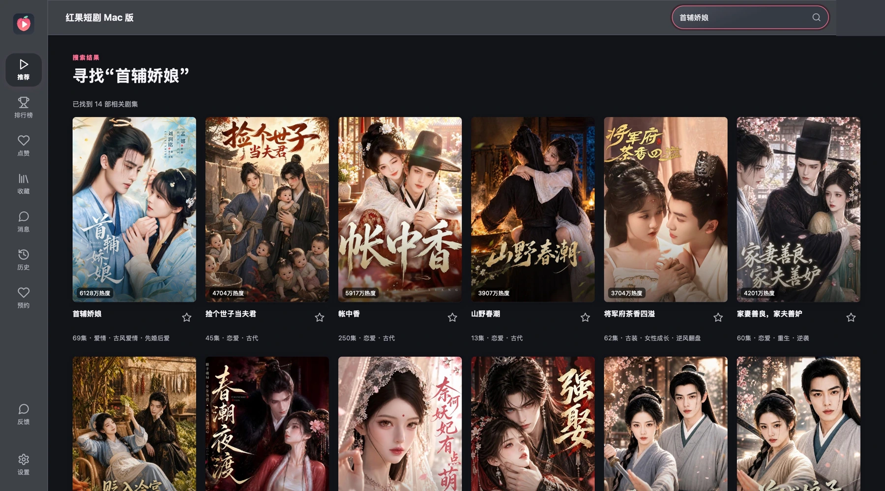
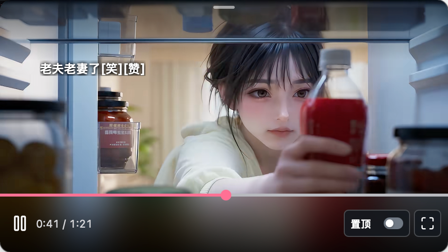
查看更多新版实拍：收藏、点赞、预约、消息、评论与榜单
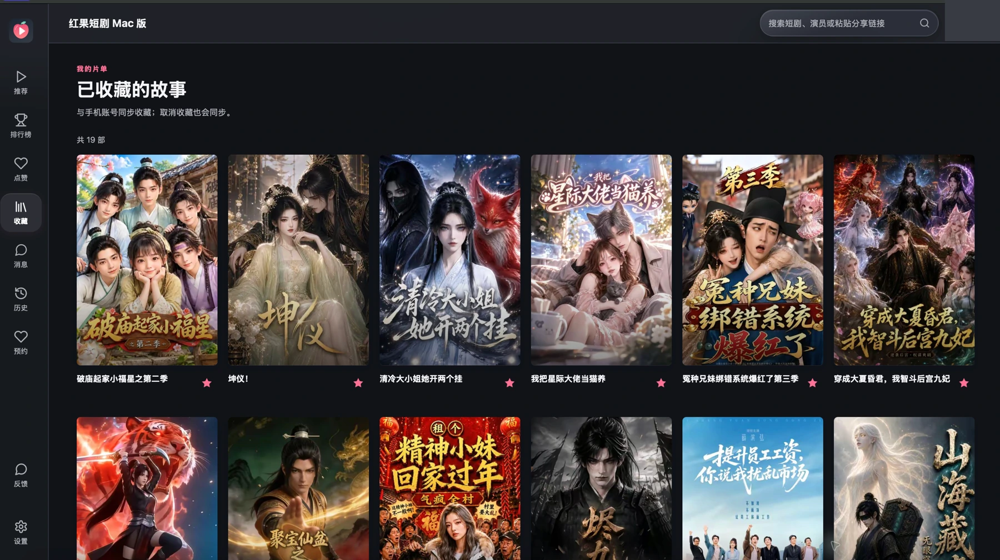
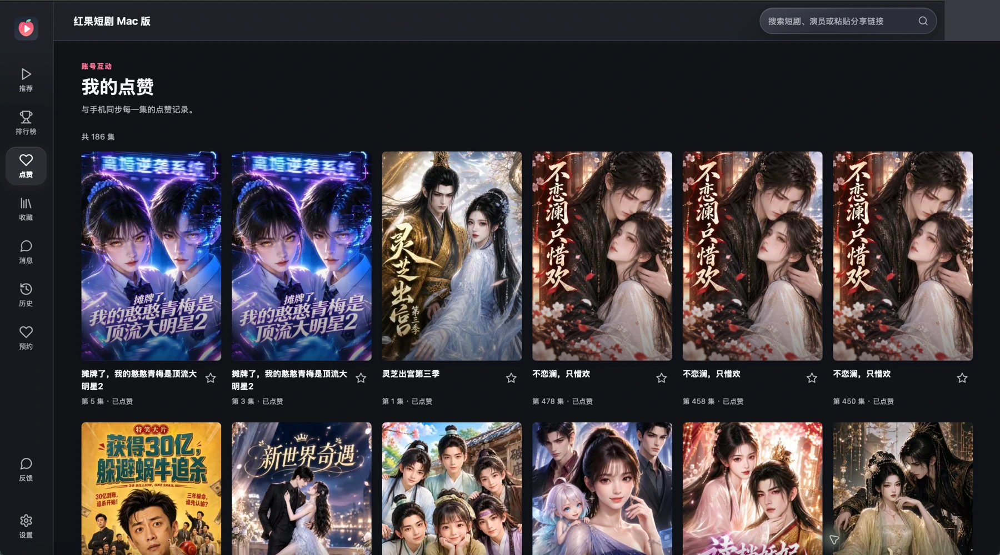
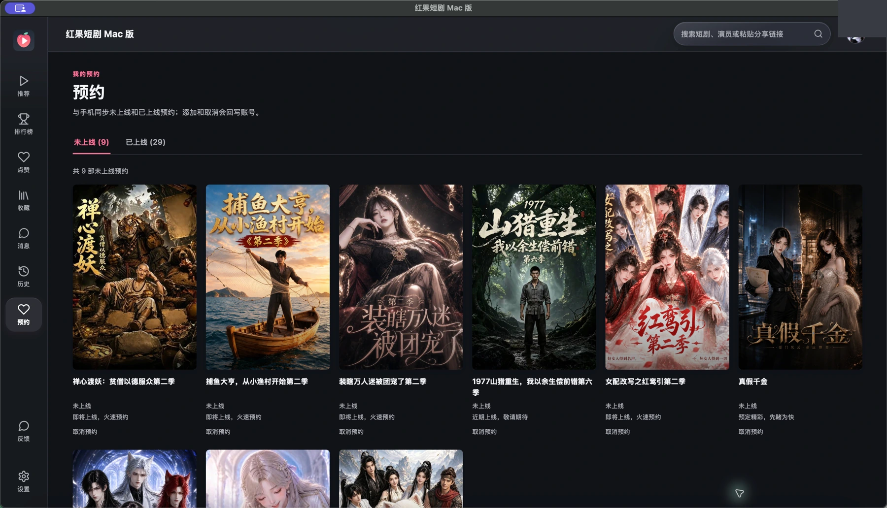
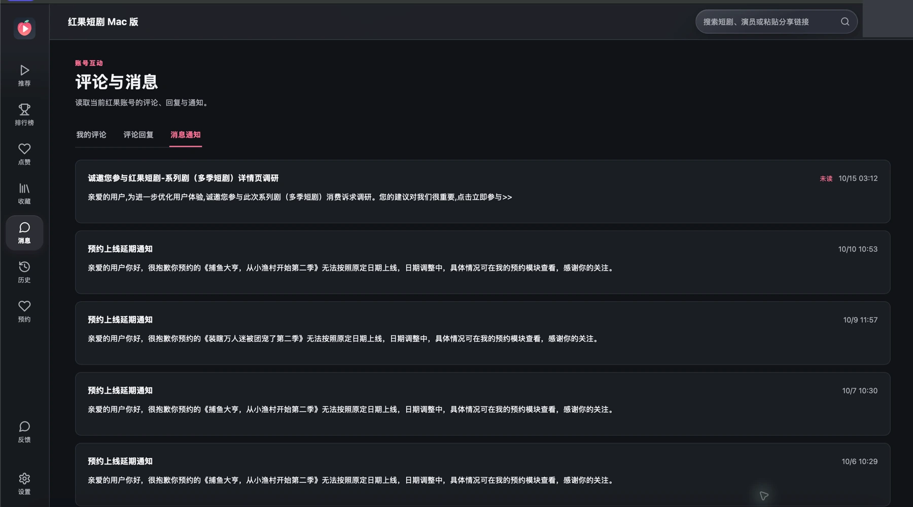
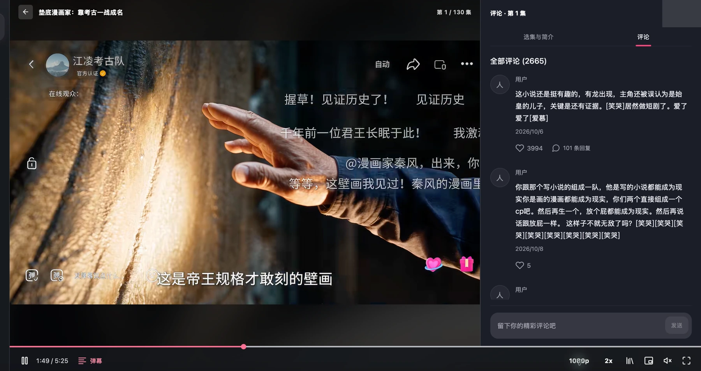
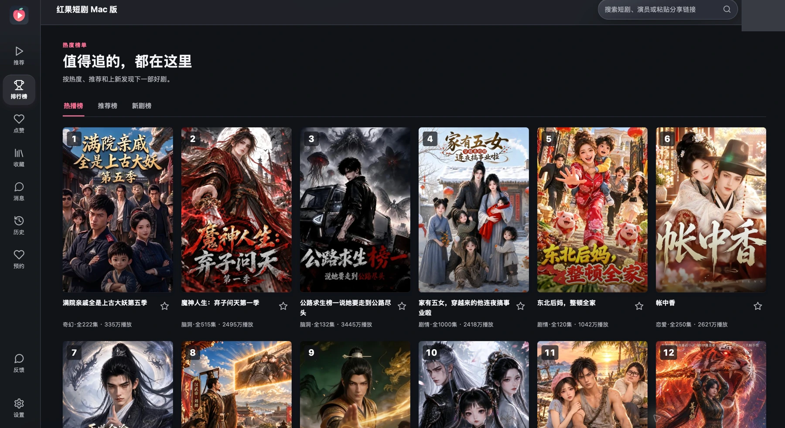
v1.0.0 真实演示
看看最新版怎么用。
2026-10-15 录制自 Mac 客户端：真实播放与选集操作，静音展示。视频与剧集画面归原权利方所有。
下载演示视频 ↗第一次使用
从安装到第一集
- 01
下载 DMG 安装包
下载完整 Mac 版安装包，无需额外下载运行组件。
- 02
拖入“应用程序”
打开 DMG，把红果短剧拖入“应用程序”文件夹。
- 03
打开，开始追剧
首次启动配置内置组件；找剧和播放需要联网。
首次打开被 macOS 拦截？查看处理说明
本版尚未经过 Apple 公证。若系统仅提示无法验证开发者，可在“系统设置 → 隐私与安全性”中确认打开；若提示恶意软件或“将损坏你的电脑”，请停止安装并反馈。
最低目标版本为 macOS 13；目前实测环境为 Apple Silicon / macOS 15.3.1。M5/macOS 26、物理 Intel 与 macOS 13 尚待实机验证。
- 01
历史移除与撤销修复
本机移除、清空状态在同步和重开后保持生效；保留手机端云端观看进度。
- 02
推荐继续获取新剧
一轮结束后向平台续取，跨轮去重并保留平台顺序；平台暂未返回新剧时可能没有更多内容。
- 03
账号同步节奏优化
改进会话保存与设备绑定，减少重复上传，遵守平台冷却和验证要求。账号同步继续开放测试。
下一集，在 Mac 上见。
红果短剧 Mac 版 v1.0.1 · 完整通用安装包
覆盖安装保留本机收藏、历史与观看位置。
安装包约 300 MiB · macOS 13+ · 物理 Intel、M5/macOS 26 待实机验证
你可能还想了解
可以同步手机上的收藏和观看记录吗？
v1.0.0 开放账号云同步测试。在 Mac 登录同一红果账号，可以读取收藏、观看历史、预约和点赞记录，Mac 上的新操作也可以回写账号云记录。同步可用性取决于平台验证和网络；手机端双向变化与跨设备进度冲突尚未全部完成实机验证，不承诺实时同步。游客模式的收藏、历史与观看位置仍保存在本机。
有哪些播放和操作功能？
支持连续推荐、选集与关联季切换、倍速、即时切画质、置顶小窗、弹幕、深浅色外观和下一集预加载。空格暂停，方向键切剧或快进退，长按右方向键临时加速。具体画质与播放结果取决于片源和设备。
项目来源、隐私与统计说明
这是非官方项目，与红果短剧官方无隶属关系。应用界面、Mac 外壳和安装流程独立实现；本版内置首次运行所需组件，客户端源码目前未公开。
版本验证范围、第三方组件与使用限制请查看项目文档和发行说明。游客收藏与观看记录保存在本机。账号登录会自动配置本机环境，可读取和回写同一账号的收藏、历史与预约；具体可用性受平台验证和网络影响。默认发送匿名启动与播放统计：随机安装 ID 在服务端散列，启动事件增加处理器架构、macOS 大版本及预设失败类别；断网时在本机限量保存至多 7 天。不会上传机型、观看内容、用户路径或错误详情；可在设置或安装界面关闭，关闭后清除待发事件。本机日志不会自动上传。本站使用 Cloudflare Web Analytics 统计页面访问；另按会话记录固定渠道类别的访问和下载按钮点击次数，不记录个人 ID、完整来源网址或实际下载结果。